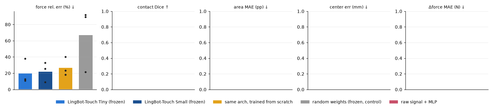

复现 LingBot-Touch：开源权重、接入 mortar 仿真器、仿真强化学习
现状（11-17 晚）：开源权重核对完成（E0）；编码器已接入同事的 mortar 软指尖仿真器，probe 正在跑（E1），第一个任务的结果显示预训练权重在 mortar 的触觉信号上有效。 夹持力 probe 的相对误差：冻结的 LingBot Tiny 为 11–38 %，结构相同但随机权重的冻结编码器为 22–92 %（3 个数据划分）。 Isaac Sim TacMap probe（E2）和 Sharpa 手 in-hand rotation 强化学习（E3）的环境已装好，下一步开始；从零重新预训练（E4）放在最后。
实验清单
论文 LingBot-Touch（蚂蚁灵波，2026-11）提出一个跨传感器的触觉编码器：磁、压阻、视触觉三类信号先映射到同一个“标准指尖空间”，再用共享 Transformer 和 JEPA 隐空间预测做预训练；下游策略只在冻结编码器后面接一个可训练的读出层。导读见 Paper Reading Lab。下表是我们能做的全部实验，以及它们和论文哪一部分对应。
| 编号 | 实验 | 对应论文 | 状态 |
|---|---|---|---|
| E0 | 开源权重核对：sha256、120 个样例推理、官方单元测试、特征可视化 | 发布的代码与权重 | 完成 |
| E1 | 接入同事的 mortar 仿真器（FEM 软指尖），在 164 段抓取录制上做 probe：力、接触图、接触中心、未来力变化 | 附录 C.1 的做法，换成 mortar | 运行中 |
| E2 | Isaac Sim + TacMap 仿真触觉，Sharpa 手抓取数据上的 probe | 附录 C.1，图 16 | 待开始 |
| E3 | Sharpa 手 in-hand rotation 强化学习，5 种触觉输入 × 3 个种子 | 表 3 中 In-Hand Rotation 一行 | 待开始 |
| E4 | 按论文实现 Tactile-JEPA 预训练，用公开或仿真数据从零训练，再重复 E1–E3 | 第 3 节方法 | 最后做 |
一、作者开源了什么，哪些能复现
| 内容 | 是否开源 | 影响 |
|---|---|---|
| 冻结的目标编码器（推理代码，Apache-2.0） | 是 | 可以直接提取特征 |
| Tiny 5.46 M、Small 21.76 M 两个权重 | 是 | sha256 与 Hugging Face 的 LFS 记录一致 |
| 120 个样例输入（Sharpa、XHand 各 30 对，每个 16 帧） | 是 | 只能跑推理，没有标签 |
| 4983 小时预训练数据 | 否 | 无法按原数据重训 |
| 预训练代码（predictor、masking、EMA、数据增强） | 否 | 重训需要按论文自己实现 |
| probe 头、带标签的 probe 数据 | 否 | 真实数据上的 probe 数字（力误差 0.81 N 等）无法重测 |
| 12 个仿真 RL 任务的环境代码 | 否 | 只能用 Sharpa 官方开源的 in-hand rotation 环境重建其中一个 |
| 真机策略（π0.5、LingBot-VLA 等接入代码） | 否 | 需要真机，不在本页范围 |
二、E0：开源权重核对
3 个失败的测试用 torch.equal 要求命令行推理和进程内推理逐位相同；实测相对误差 5×10⁻⁷，来自多线程浮点累加顺序，不是权重或流程的问题。


三、E1：把编码器接到同事的 mortar 仿真器上
能不能接？能。LingBot-Touch 不依赖 Isaac Sim，只需要每根手指一组采样点的位置和每个点的形变量。mortar 的指尖本身就是 FEM 软体，比论文用的“刚体指尖 + 射线测穿透深度”更接近真实的形变。我们用的是 mortar 抓取实验录下的 164 段过程（立方块 57、杯子 30、茶壶 75、其它 2），每 30 ms 一帧，记录了两根指尖全部 1481 个 FEM 节点的位置。
- 形变量。去掉手指的整体刚体运动（用离物体表面 8 mm 以外的节点做刚体拟合），剩下的位移投到接触面的法向上，得到每个节点的压入深度（mm）。最大压入深度和夹持力的相关系数 0.999。
- 接触面。UMI 指尖是 Fin-ray 结构，内部肋板也朝着对面的手指。我们只取从对面手指看过去最外层的那个平面（约 122 × 26 mm，129 个节点）。
- 映射到标准指尖空间。把这块接触面沿长、宽方向线性地对到 Sharpa 视触觉 96 点参考布局上（96 个点全部落在接触面内）；左指放拇指槽，右指放食指槽，其余三指不生成 token。
- 数值。深度用 Sharpa 官方 TacMap 里的量化函数换成 0–255（0.5 mm 以内每 0.005 mm 加 1，之后每 0.03 mm 加 1，5.15 mm 饱和），除以 255 放进 Z 通道，和真实 Sharpa 传感器的尺度一致。

probe 结果
做法和论文附录 C.1 相同：编码器冻结，只训练一个注意力读出头（8 个可学习 query + 交叉注意力 + MLP），每个任务单独训练。输入是 8 帧（0.24 s）窗口，步长 2 帧，约 4.9 万个窗口。对照组：同样结构但随机权重的冻结编码器（检验“是预训练在起作用，而不是结构或读出头”）、同结构从零训练（相当于论文里和策略一起训练的 Tactile CNN）、直接在原始信号上训练的 MLP。
按抓取分组随机留出 20 %（3 个划分）
| 表示 | 夹持力 相对误差（接触窗口） ↓ | 接触图 Dice（有接触的窗口） ↑ | 接触面积 MAE ↓ | 接触中心误差 ↓ | 未来 0.24 s 力变化 MAE（变化 > 0.5 N 的窗口） ↓ |
|---|---|---|---|---|---|
| LingBot Tiny（冻结） | 20.43% ± 12.34 | — | — | — | — |
| LingBot Small（冻结） | 22.60% ± 9.92 | — | — | — | — |
| 同结构从零训练 | 27.28% ± 9.47 | — | — | — | — |
| 随机权重（冻结，对照） | 67.45% ± 32.52 | — | — | — | — |
| 原始信号 MLP | — | — | — | — | — |

四、E2：Isaac Sim TacMap 仿真 probe（论文附录 C.1）
环境已装好（Isaac Sim 5.1 + Isaac Lab 2.3，Sharpa 官方仓库测试过的版本），接下来在 Sharpa 手上接 TacMap 传感器、采集抓取数据。论文报告的仿真 probe：接触区域 Dice 0.708，面积 MAE 1.089 个百分点，力 MAE 3.264 N，未来力变化 MAE 0.459 N。
五、E3：Sharpa 手 in-hand rotation 强化学习（论文表 3）
计划：用 Sharpa 官方开源的 in-hand rotation 环境，把观测里的触觉换成论文的 5 种配置（无触觉、二值接触、原始信号、和策略一起训练的 CNN、冻结 LingBot + 可训练读出），各 3 个种子。论文这一行的成功率：11.5 / 18.3 / 33.4 / 26.6 / 56.4 %。
六、E4：从零重新预训练
预训练数据（4983 小时）和训练代码都没有开源，只能按论文第 3 节自己实现 Tactile-JEPA（掩码隐空间预测、EMA 目标编码器、多层目标），用仿真数据（mortar + TacMap）或公开触觉数据训练，再用 E1–E3 同样的测试比较它和官方权重。这一步得到的不是论文数字的严格复现，而是“方法在我们的数据上是否成立”。
七、测试条件
| 代码与权重 | robbyant/lingbot-touch（commit dec8025）；Tiny / Small encoder.pt，sha256 ddb8b435… / f87cdc17… |
| E0 | CPU，PyTorch 2.11，官方 120 个样例 |
| E1 | mortar 录制（G2 夹爪 + UMI 软指尖，FEM）；probe 在 RTX PRO 6000 上训练，PyTorch 2.7，8 epoch，AdamW |
| E2 / E3 | Isaac Sim 5.1 + Isaac Lab 2.3（Sharpa 官方 RL 仓库测试过的版本），sharpa-tacmap、sharpa-rl-lab |